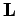

Dreiecksmatrix
- Rechte oder obere Dreiecksmatrix
 (im Englischen von upper) ist eine Matrix, in der alle Elemente unterhalb der Hauptdiagonale den Wert Null besitzen:
(im Englischen von upper) ist eine Matrix, in der alle Elemente unterhalb der Hauptdiagonale den Wert Null besitzen:
- Linke oder untere Dreiecksmatrix
-  (im Englischen von lower) ist eine Matrix, in der alle Elemente oberhalb der Hauptdiagonale den Wert Null besitzen: